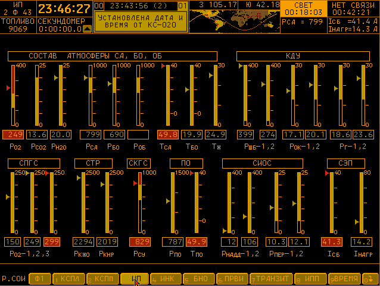
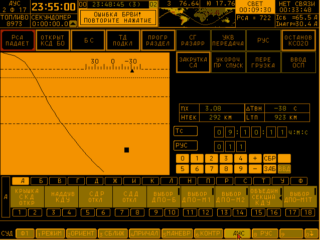
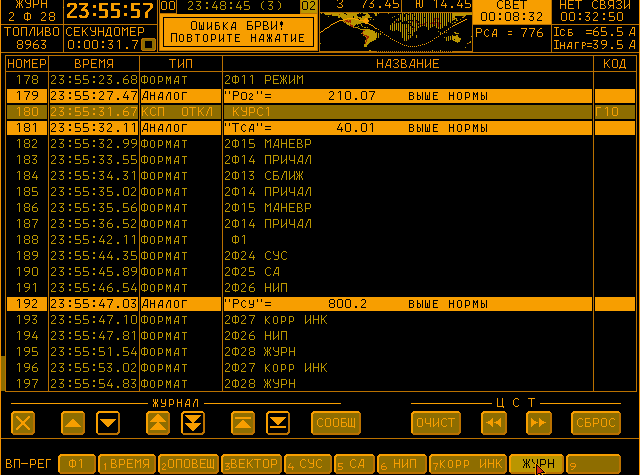
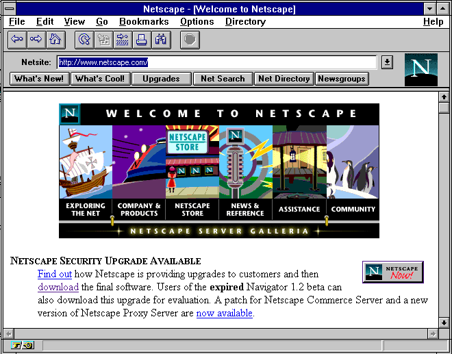
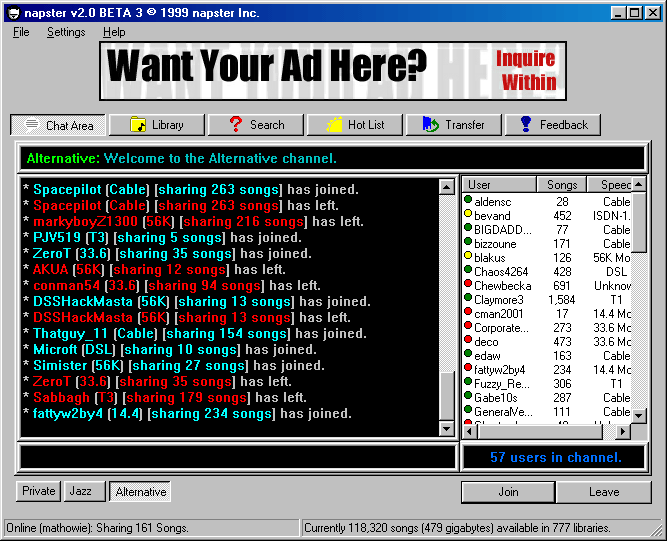
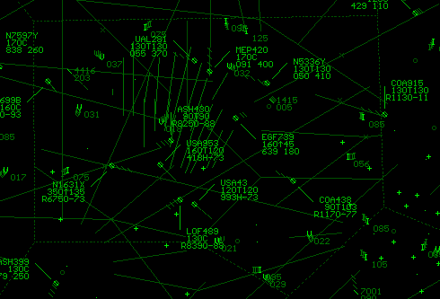

This up-Sun photo was taken from near the ALSEP Central Station back toward the LM in order to provide relative location information. As with the astronauts’ bootprints, the track made by the MET tires are compact, smooth, and, as can be seen so dramatically in this picture, more highly reflective than the rough undisturbed surface.







via kremlint:
i got the russian spacecraft simulator working
More information http://4archive.org/g/res/42590842
“Spacecrafts use software to provide an interface to the astronauts. There’s a training version of this very software which simulates a flight. It’s what you see in the OP pic. It looks like some 1337 haX0r software since it’s been develeoped in the 60ies until at least 2002.”
You can definitely use this software if you read through the posts in that link - I think they have a copy of the software available for download. You can run it using DOSBox. It’s very interesting, and very confusing, trying to figure out what the hell you’re doing the whole time.





This NeXT Computer used by Tim Berners-Lee at CERN became the world’s first web server
A Black Mesa Day.


Half-Life 3 Fan Concept Artworks by Shane Baxley


Half-Life Skyboxes.
From the deserts all the way to Xen.
LambdaGeneration.com | Twitter | Facebook | YouTube | Steam | Twitch
This is my favorite one. Full size here.

While looking at the HTML/CSS of my tumblr theme, I found the sprite image where the icons and all other stuff is referenced from - and I realized I never knew the Start menu can be opened. Oh well.

Voyager control centre at the California Institute of Technology (Caltech), Pasadena California, 1980.
Photograph: NASA/Getty Images








F-Sim Space Shuttle
Google Play
iTunes